Velociraptor
Kẻ săn mồi vô địch kỷ Phấn trắng
Tổng quan
Kỷ
Cretaceous
Họ
Dromaeosauridae
Chi
Velociraptor
Dài
2 m
Cao
1.8 m
Nặng
15 kg
Môi trường
Velociraptor là một chi khủng long theropoda thuộc họ Dromaeosauridae từng tồn tại vào cuối kỷ Creta, khoảng 83 đến 70 triệu năm trước. Hiện có hai loài được công nhận, một loài khác từng được phân vào chi này.
Nguồn: wikipedia.org
Phân bố
Miền Trung và Đông Bắc châu Á
Thông tin thêm về Velociraptor
Tên khoa học
Được đặt tên bởi: Osborn (vào năm 1924). Tên này có nghĩa là "Chim săn mồi tốc độ", tên gọi tắt là Raptor.

Kích thước
Cao khoảng 1,8 mét (6 feet) và nặng khoảng 15 kg. Velociraptor là một chi khủng long theropoda nhỏ sống trong kỷ Phấn Trắng muộn.

Kỷ nguyên: Cuối kỷ Creta (Phấn Trắng)
Theo một số nghiên cứu cho thấy, khủng long móng vuốt Velociraptor được sống ở kỷ Campanian thuộc kỷ Creta muộn, tức là cách đây khoảng 74-70 triệu năm trước.
Sự tuyệt chủng
Velociraptor đã tuyệt chủng vào cuối kỷ Phấn Trắng do sự kiện va chạm K-Pg (K là ký hiệu cho kỷ Phấn Trắng, Pg là ký hiệu cho Paleogene - kỷ đầu tiên của thời kỳ Cenozoic), và nó đã gây ra sự tuyệt chủng đại diện cho 75% loài sinh vật trên Trái Đất, bao gồm cả Velociraptor.

Mẫu vật đầu tiên
Các mẫu hóa thạch Velociraptor đầu tiên được tìm thấy tại khu vực Gobi Desert của Mông Cổ vào đầu những năm 1920, và cho đến nay, nhiều mẫu đất và hóa thạch khác của loài này đã được tìm thấy ở các khu vực khác nhau của Trung Quốc và Nga. Các nhà khoa học cho rằng Velociraptor đã sống trong môi trường rừng rậm ẩm ướt, nơi chúng có thể săn mồi và sinh sống.

Khám phá
Mẫu vật đầu tiên của khủng long móng vuốt Velociraptor được tìm ra do đoàn khảo cổ của Bảo tàng Lịch sử tự nhiên Mỹ tại Mông Cổ vào năm 1920, mẫu vật thứ hai được tìm thấy vào những năm đầu của thập niên 70 thế kỷ XX, là một mẫu hóa thạch nổi tiếng gồm xương hoàn chỉnh của chúng quấn quanh một bộ xương của con Protoceratops, ắt hẳn trong lúc đánh nhau, chúng đã bị bão cát vùi lấp.
Chế độ ăn và săn mồi
Động vật yêu thích làm món ăn của Velociraptor chính là khủng long tiền sừng Protoceratop. Không nhanh, không nhạy, không to lớn, nhưng điều làm chúng có thể sống sót qua hệ sinh thái Mông Cổ ở kỷ Creta muộn, đó chính là nhờ tấn công những con khủng long tiền sừng Protoceratop, vì loại này di chuyển khá chậm và riêng biệt nên có lẽ đây là điểm yếu khiến Velociraptor tấn công một cách mạnh mẽ.

Ngoại hình
Khủng long móng vuốt Velociraptor có một cái mõm dài với 80 cái răng vô cùng bén và cong, dẹt ở hai bên. Bên cạnh đó, mỗi bàn tay tuy chỉ có ba ngón nhưng mỗi ngón lại có móng vuốt dài hệt như vuốt của loài đại bàng. Trên ngón chân thứ hai của mỗi bàn chân cũng có vuốt rất sắc bén cong và dài 9cm. Tất cả những điều này cảnh báo cho những loài động vật khác về loài khủng long săn mồi hung tợn. Ngoài ra, đuôi của nó dài và cứng, có chức năng giữ thăng bằng dễ dàng hơn khi chạy và khi rẽ ngoặt bất ngờ trong một số trường hợp.
Đặc biệt hơn một số loài khủng long khác, khủng long móng vuốt Velociraptor có một bộ lông vũ bao bọc bên ngoài cơ thể để có thể giúp con vật cách nhiệt, điều cần thiết cho một con vật máu nóng có đời sống hoạt động đặc biệt như chúng.
Tốc độ
Các nhà khoa học ước tính rằng tốc độ của nó có thể đạt được khoảng 40-60 km/h. Tuy nhiên, đây chỉ là ước tính và không được xác nhận chính thức bởi các bằng chứng hóa thạch hoặc phân tích hình thái học của các chi tiết xương của loài này.